요원 28명
13에서는 경기 시작 전에 요원 한 명을 고릅니다. 요원은 네 역할 가운데 하나에 속하고, 요원마다 능력 네 가지(Q · E · C와 궁극기 X)가 다릅니다. 능력 112개는 하나도 겹치지 않습니다.
타격대 Duelist · 7명
앞장서서 길을 여는 돌격수입니다. 화력과 이동 능력으로 사이트에 가장 먼저 들어가거나, 적이 모인 곳을 흔들어 놓습니다. 팀이 따라 들어올 틈을 만드는 것이 일입니다.
감시자 Sentinel · 8명
한 곳을 단단히 지키는 수비수입니다. 함정, 벽, 감지 장치로 길을 막고 적이 오는 방향을 알려 줍니다. 혼자서도 한쪽 측면을 맡을 수 있어 팀의 등을 지켜 줍니다.
척후대 Initiator · 7명
정보를 모으고 적을 흔드는 선봉 지원입니다. 적의 위치를 드러내거나 눈을 멀게 해서 팀이 유리하게 교전을 시작하도록 돕습니다.
전략가 Controller · 6명
연막, 벽, 장판으로 시야와 길을 조절하는 지휘수입니다. 어디를 막고 어디를 열지 정해서 팀이 안전하게 사이트로 들어가거나 후퇴하게 합니다.
능력은 이렇게 씁니다
일반 능력(Q, E, C)은 라운드가 시작될 때 다시 채워집니다. 두 번 쓸 수 있는 능력도 있고, 한 번 쓰면 정해진 시간이 지나야 다시 쓸 수 있는 능력도 있습니다. 궁극기(X)는 점수를 모아야 쓸 수 있습니다. 적을 처치하거나, 적에게 150의 피해를 입히거나, 스파이크를 설치하고 해제하거나, 라운드에서 이기고 지는 것으로 점수가 쌓입니다. 요원을 처음 고른다면 능력 설명이 단순한 요원부터 시작해 보세요. 같은 요원으로 경기를 거듭하면 요원 숙련도가 올라 레벨이 표시됩니다.
요원 선택 화면에서는 팀 안에서 같은 요원을 중복해서 고를 수 없습니다. 모드마다 능력을 쓸 수 있는지가 다르니 모드 소개에서 확인하세요.
타격대 7명
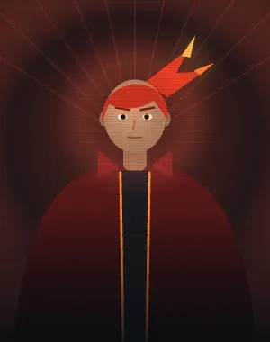
화령타격대
“불은 길을 묻지 않는다.”
전선을 강제로 여는 돌격형. 불길로 적의 자리를 지워버린다.
- Q불꽃 장막 2회 · 라운드마다 채움전방에 불의 장벽을 세운다. 통과하는 적에게 초당 12 피해.
- E화염탄 재사용 35초폭발하는 화염구. 직격 55, 범위 30 피해 후 3초간 장판.
- C용암 갑옷 라운드마다 채움5초간 용암 방패를 두른다. 받는 피해 60% 감소, 4m 안 적은 초당 10 피해.
- X업화 궁극기 · 충전 5점궁극기 — 7초간 손에서 화염을 내뿜는다. 누르고 있으면 18.7m 앞을 태우고 불붙은 바닥을 남긴다.상대하는 법: 화염 사거리 밖으로 물러나고 불붙은 바닥을 피하세요.
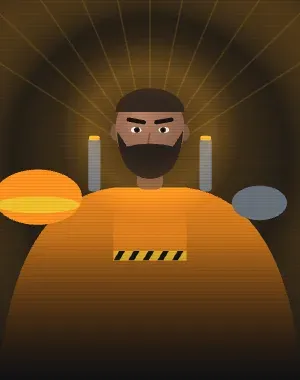
강철타격대
“문은 부수라고 있는 거다.”
정면 돌파 전문. 방패를 들고 가장 먼저 들어간다.
- Q지진 강타 2회 · 라운드마다 채움강철 주먹으로 땅을 내려찍어 앞쪽 12m 부채꼴 적에게 30 피해, 2초간 강제로 앉힌다.
- E전선 방패 재사용 35초8초간 전방 총격 피해를 60% 감소시키는 방패를 든다.
- C돌진 라운드마다 채움전방으로 빠르게 돌진. 부딪힌 적에게 40 피해와 넉백.
- X파쇄 궁극기 · 충전 6점궁극기 — 강철 주먹 3회. 앞으로 내지르면 18.7m 충격파가 적을 밀치고 최대 80 피해·둔화·뇌진탕.상대하는 법: 정면 충격파를 옆으로 피하고 남은 주먹 횟수를 확인하세요.
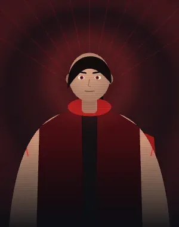
홍혈타격대
“네 피가 내 숨이다.”
싸울수록 살아나는 흡혈 돌격형. 한 번은 죽음도 거절한다.
- Q혈흡 라운드마다 채움8초간 준 피해의 45%를 회복하고 이동 속도 20% 증가.
- E피의 맹세 라운드마다 채움피 20을 바치고 6초간 내가 주는 모든 공격이 30% 강해진다.
- C핏빛 구체 라운드마다 채움맞은 적의 체력을 6초간 40 깎는다(부패). 시간이 지나면 돌아온다.
- X혈편 궁극기 · 충전 6점궁극기 — 10초간 피 채찍. 28.8m 안의 적을 후려쳐 60 피해 후 끌어당기고 체력을 빼앗는다. 12초 동안 한 번은 쓰러져도 되살아난다.상대하는 법: 채찍 거리를 유지하고 되살아난 뒤 다시 공격하세요.
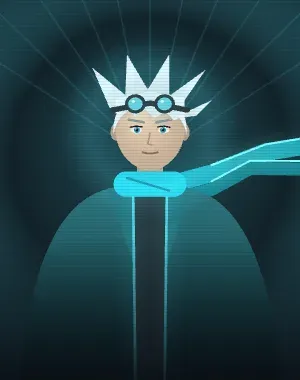
바람타격대
“바람은 막을 수 없다.”
바람을 타고 날아다니며 적을 날려 버리는 공중 돌격형.
- Q돌풍 베기 2회 · 라운드마다 채움앞쪽 15m 부채꼴로 바람 칼날을 날린다. 맞은 적은 25 피해를 입고 6m 밀려난다.
- E상승 기류 재사용 22초하늘 높이 뛰어오른 뒤 3초 동안 천천히 활공한다.
- C칼바람 가르기 재사용 30초바람 칼날이 벽을 관통해 54m 직선으로 땅을 가른다. 맞은 적 뇌진탕 3.5초.
- X폭풍의 눈 궁극기 · 충전 7점궁극기 — 8초 동안 폭풍의 눈이 된다. 12m 안 적을 계속 밖으로 밀어내며 초당 8 피해, 나는 천천히 떨어진다.상대하는 법: 바람의 중심과 거리를 벌리고 범위 밖에서 공격하세요.
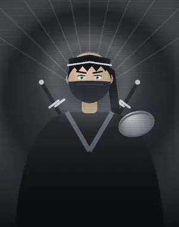
칼날타격대
“보이면 이미 늦었다.”
칼날을 던지고 그림자처럼 등 뒤를 베는 암살형.
- Q부메랑 칼날 2회 · 라운드마다 채움25m 날아갔다 돌아오는 칼날. 가는 길과 오는 길에 닿은 적마다 35 피해.
- E그림자 일섬 재사용 28초앞쪽 22m 안 가장 가까운 적의 등 뒤로 순간이동해 베어 40 피해.
- C표식 단검 2회 · 라운드마다 채움단검이 박힌 적은 5초간 취약(받는 피해 1.5배)해지고 위치가 드러난다.
- X칼날 만화경 궁극기 · 충전 7점궁극기 — 손 위에 날 선 칼날 5개. 좌클릭 한 개씩(몸 55·머리 160), 우클릭 남은 칼날 부채꼴 투척. 처치하면 다시 채워진다.상대하는 법: 사선을 끊고 일제 투척 소모 후 공격하세요.
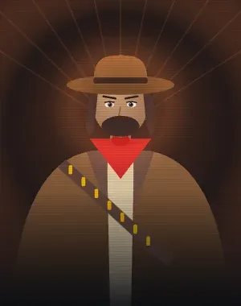
황야타격대
“먼저 뽑는 쪽이 산다.”
튕기는 총알과 빠른 손, 현상금과 결투로 싸우는 총잡이.
- Q도탄 라운드마다 채움8초간 내 공격이 튕긴다. 적에게 맞으면 9m 안의 다른 적에게 절반 피해로 한 번 더 튄다.
- E속사 재사용 24초탄창을 즉시 가득 채우고 5초간 연사 속도 60% 증가, 재장전은 두 배 빠르게.
- C현상금 2회 · 라운드마다 채움조준한 적(50m)에게 12초 현상금을 건다. 그 적을 우리 팀이 쓰러뜨리면 팀 전원 궁극기 1칸, 처치한 사람 체력 +30.
- X결투 궁극기 · 충전 8점궁극기 — 조준한 적(40m)과 8초 결투. 둘은 원 밖으로 못 나가고 다른 누구도 들어오거나 끼어들 수 없다. 내가 주는 피해 25% 증가, 이기면 체력 +50.상대하는 법: 결투 안에서는 엄폐와 거리로 시전자의 강화 시간을 버티세요.
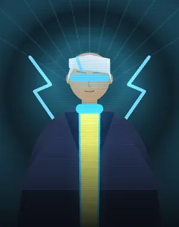
네온타격대
“멈추면 지는 거야.”
몸에 전류를 두른 배달원 출신 돌격수. 튕기는 전격탄으로 길을 열고, 전류 통로를 깔고, 질주와 미끄러지기로 누구보다 먼저 닿는다.
- Q되튐 전격 2회 · 라운드마다 채움한 번 튕기는 전기탄. 닿는 곳마다 0.8초 뒤 반경 5m에 전기가 터져 2.5초 뇌진탕. 벽 너머의 적에게는 닿지 않는다.
- E질주 회로 재사용 30초10초간 이동 속도 +40%. 좌클릭(모바일 사격)으로 6m 미끄러지며 질주를 끝내고 무기로 돌아온다. 처치 2회마다 미끄러지기가 다시 찬다.
- C전류 통로 라운드마다 채움앞으로 최대 25m, 높이 4m 전류 벽 두 개를 깔아 4초간 양옆 시야를 막는다. 가운데 2.4m 통로로 지나가며 쏠 수 있다.
- X과충전 궁극기 · 충전 7점20초 동안 총 대신 손끝에서 40m 전기 빔을 쏜다. 0.1초마다 피해 18. 궁극기 중 좌클릭은 빔, 우클릭은 미끄러지기.상대하는 법: 빔 사선을 엄폐하고 슬라이딩 후 위치를 다시 확인하세요.
감시자 8명
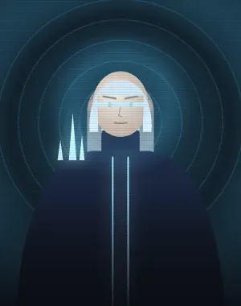
서린감시자
“기다리는 쪽이 이긴다.”
지역을 잠그는 방어형. 얼음으로 길을 닫고 발을 묶는다.
- Q서리 덫 2회 · 라운드마다 채움설치형 덫. 밟은 적을 4초간 55% 둔화시키고 위치를 노출한다.
- E빙벽 재사용 40초단단한 얼음벽을 세운다. 체력 400, 총격으로 파괴 가능.
- C한기 구역 2회 · 라운드마다 채움냉기 연막. 내부의 적은 25% 둔화된다. 14초 지속.
- X빙결 궁극기 · 충전 5점궁극기 — 넓은 원형 구역을 얼려 적을 2초간 완전히 묶는다.상대하는 법: 빙결 구역을 벗어나거나 시전 전에 거리를 벌리세요.
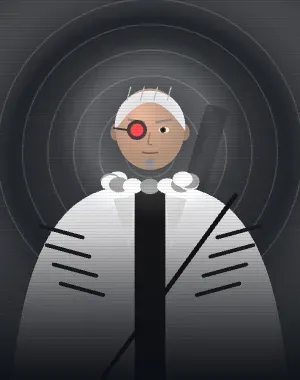
백호감시자
“한 발이면 끝난다.”
장거리 제압 특화. 열린 각을 홀로 지킨다.
- Q관통 사격 2회 · 라운드마다 채움벽을 관통하는 저격탄. 직격 80 피해.
- E정찰 화살 2회 · 라운드마다 채움명중 지점 반경 25.2m의 적을 3초간 벽 너머로 표시한다.
- C곡사 화살 2회 · 라운드마다 채움조준한 곳(60m)에 화살을 높이 쏘아 올린다. 1.6초 뒤 반경 6m 최대 45 피해, 2초간 40% 둔화.
- X응시 궁극기 · 충전 5점궁극기 — 12초간 빛의 활 3발을 든다. 벽과 적을 모두 꿰뚫는다(몸 130·머리 200). 전역 위치 탐지는 하지 않는다.상대하는 법: 벽 뒤에서도 사선을 바꾸고 세 발 소모를 유도하세요.
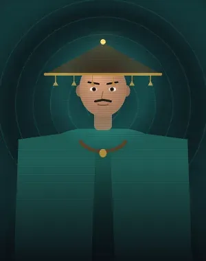
명종감시자
“종이 울리면 이미 늦었다.”
소리로 지키는 감시자. 발소리 하나, 총성 하나도 놓치지 않는다.
- Q경종 2회 · 라운드마다 채움벽과 벽 사이에 인계철선. 건드린 적은 노출·뇌진탕·둔화.
- E종소리 센서 재사용 30초16.2m 안에서 뛰거나 총을 쏜 적을 묶고 뇌진탕시킨다. 부술 수 있다.
- C파문 방벽 라운드마다 채움총알을 막는 반구 방벽. 9초 지속.
- X대종 궁극기 · 충전 7점궁극기 — 거대한 종이 떨어져 반경 32.4m 적의 무기를 4.5초 봉인한다.상대하는 법: 종의 범위를 피하거나 봉인 중 엄폐하며 능력으로 대응하세요.
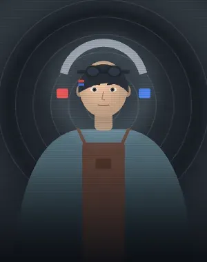
자철감시자
“끌어당길지 밀어낼지는 내가 정해.”
자력 장치로 자리를 지키는 기술자. 설치물로 한 구역을 통째로 묶는다.
- Q자력 포탑 라운드마다 채움앞쪽 180도를 지키는 포탑. 30초 지속, 부술 수 있다.
- E자기 닻 재사용 25초발밑에 닻을 박는다. 다시 누르면 61.2m 안에서 닻으로 귀환.
- C자성 그물 라운드마다 채움반경 10.8m 적을 4초간 강제로 앉히고 크게 둔화.
- X자기장 돔 궁극기 · 충전 7점궁극기 — 10초간 반경 12m 자기장. 바깥에서 안으로 들어오는 일반 총격 피해를 50% 흡수한다. 흡수량 60마다 경계의 적을 밀어내는 자기 파동가 나간다. 능력 피해와 안쪽에서 쏜 총은 막지 못한다.상대하는 법: 영역 안으로 들어가 쏘거나 능력 피해로 대응하세요.
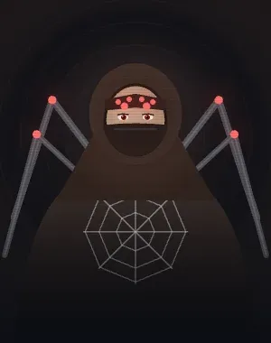
거미감시자
“걸리면 끝이다.”
거미줄로 길목을 묶고 걸린 적을 끌어오는 매복형.
- Q거미 타기 라운드마다 채움10초 동안 거미처럼 벽에 붙는다. 벽으로 걸어가면 타고 올라가고, 멈추면 매달리고, 옆으로 가면 벽을 따라 기고, 꼭대기에 닿으면 위에 올라선다. 점프하면 벽에서 떨어진다.
- E거미줄 이동 재사용 20초조준선(30m)에 적이 있으면 거미줄로 감아 7m 끌어오고 2초간 40% 둔화시킨다. 적이 없으면 조준한 곳(48m)에 거미줄을 쏴서 그쪽으로 빠르게 끌려간다. 가는 도중 점프하면 줄을 끊고 튕겨 나가고, 벽 옆에 닿으면 4초간 벽에 매달린다. 닿을 곳이 없으면 충전이 돌아온다.
- C고치 라운드마다 채움조준선(30m)의 적을 고치에 가둬 2.5초간 움직이지 못하게 하고 위치를 드러낸다. 적이 없으면 내가 2초간 고치 속에 들어가 무적이 되고(움직일 수 없음) 체력 40을 회복한다.
- X거미굴 궁극기 · 충전 7점궁극기 — 조준한 곳 반경 16m를 12초간 거미줄로 덮는다. 안의 적은 50% 둔화되고 위치가 드러나며, 3초 넘게 머물면 2초간 묶인다.상대하는 법: 거미줄 안에 오래 머물지 말고 경계를 빠져나오세요.
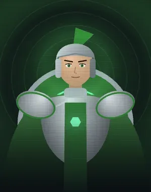
수호감시자
“내 뒤에 서.”
결계와 성채로 아군을 지키는 방패.
- Q수호 결계 라운드마다 채움발밑에 6m 결계를 친다(6초). 안에 있는 아군은 받는 피해 60% 감소.
- E수호 연결 재사용 30초가장 가까운 아군과 8초간 연결한다. 그 아군은 받는 피해 50% 감소, 초당 5 회복.
- C함성 라운드마다 채움12m 안 아군의 둔화·실명·뇌진탕 같은 나쁜 효과를 지우고 방어구 +30.
- X성채 궁극기 · 충전 7점궁극기 — 나를 둘러싼 네 면의 방벽을 10초간 세운다(모서리는 열림). 안의 아군은 초당 8 회복.상대하는 법: 열린 모서리로 우회해 내부를 압박하세요.
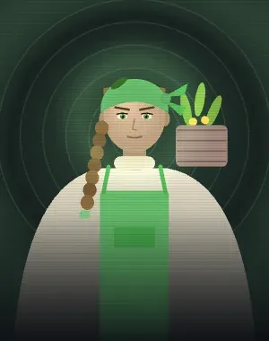
약초감시자
“쓴 약이 몸에 좋다.”
약과 독을 다루며 아군을 살리는 약사.
- Q치유 물약 2회 · 라운드마다 채움30m 안 가장 다친 아군(나 포함)에게 물약이 날아간다. 즉시 40, 3초간 15 더 회복.
- E수면 가루 재사용 30초조준한 곳 반경 5m에 수면 가루. 0.8초 뒤 안의 적은 3초간 잠들어 묶인다(맞으면 깸).
- C약초 주머니 라운드마다 채움발밑에 약초 주머니(20초). 다친 아군이 3m 안에 오면 주워서 50 회복.
- X생명의 정원 궁극기 · 충전 8점궁극기 — 반경 12m 정원을 12초간 세운다. 총 180의 생명력을 다친 아군에게 0.5초마다 최대 12씩 공평하게 나누고 둔화·실명·뇌진탕·부패를 정화한다. 생명력이 소진되면 끝난다. 무적이나 부활은 주지 않는다.상대하는 법: 정원 밖으로 교전을 유도하세요. 무적이나 부활은 없습니다.
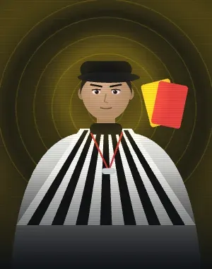
심판감시자
“규칙은 규칙이다.”
카드와 휘슬로 전장의 규칙을 정하는 심판. 쏘면 아프고, 선을 넘으면 약해지고, 반칙하면 퇴장이다.
- Q옐로카드 2회 · 라운드마다 채움조준한 적(40m)에게 옐로카드. 8초 동안 그 적은 총을 쏠 때마다 체력 4를 잃는다(최대 40). 카드를 받은 적에게 한 번 더 주면 경고 누적 — 한 발에 8씩.
- E타임아웃 재사용 32초휘슬을 분다. 4초 동안 내 자리 8m 안에서는 양 팀 누구도 피해를 주지도 받지도 않는다(총·능력·폭발 모두).
- C오프사이드 라운드마다 채움조준한 곳(25m)에 18m 선을 긋는다(15초). 적이 선을 넘어 우리 쪽으로 들어오면 휘슬 — 5초 동안 그 적이 주는 모든 피해가 절반이 된다.
- X레드카드 궁극기 · 충전 7점궁극기 — 조준한 적(40m)을 퇴장시킨다. 그 적은 즉시 자기 팀 시작 지점으로 돌아가고 5초간 능력을 쓸 수 없다. 맞힐 적이 없으면 궁극기를 돌려받는다.상대하는 법: 조준을 피하고 복귀 후 팀과 다시 합류하세요.
척후대 7명
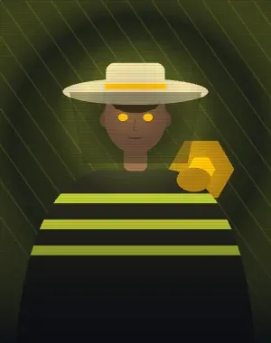
군봉척후대
“한 마리가 보면, 전부가 본다.”
벌 떼를 풀어 찾고 쫓고 묶는다. 숨을 곳을 남기지 않는 척후.
- Q정찰 벌떼 라운드마다 채움던진 곳 반경 21.6m를 벌 떼가 5.5초간 뒤져 적을 드러낸다.
- E추적 벌 재사용 25초81m 안의 가장 가까운 적을 쫓아 30 피해와 뇌진탕.
- C벌집 함정 라운드마다 채움숨긴 벌집. 적이 다가오면 터져 5초간 지속 피해와 둔화.
- X여왕벌 궁극기 · 충전 7점궁극기 — 조준한 곳에 체력 120의 여왕을 12초간 세운다. 18m 안 보이는 적에게 1.5초마다 일벌이 출격한다(18 피해). 여왕을 쏴서 파괴하거나 영역을 벗어나면 멈춘다.상대하는 법: 여왕을 파괴하거나 시야와 영역을 벗어나세요.
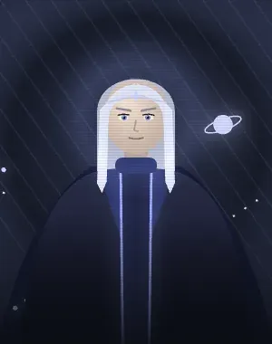
별빛척후대
“별이 떨어지면 소원 따윈 없다.”
하늘의 별을 끌어내려 적을 띄우고 빨아들이는 우주형.
- Q유성 낙하 라운드마다 채움1.2초 뒤 조준한 곳에 유성이 떨어진다. 반경 6m 최대 60 피해, 2초 뇌진탕.
- E부양 재사용 30초조준한 곳 반경 6m 적을 1.5초간 공중에 띄워 묶고 3초간 위치를 드러낸다.
- C별똥 이동 재사용 18초별똥별처럼 조준한 곳으로 최대 90m 순간이동.
- X블랙홀 궁극기 · 충전 8점궁극기 — 조준한 곳에 5초간 블랙홀. 20m 안 적을 중심으로 빨아들이고(6m 안은 초당 10 피해), 사라질 때 8m 안 40 피해.상대하는 법: 중심에서 멀어지고 끝날 때 폭발 범위를 피하세요.
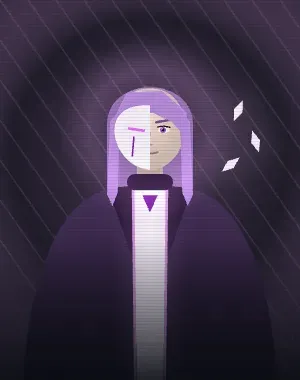
환영척후대
“어느 쪽이 진짜일까?”
분신과 자리바꿈으로 적의 눈을 속이는 환술사.
- Q분신 라운드마다 채움분신 둘이 앞으로 달려가다 3초 뒤 터진다. 7m 안 적은 1.5초 실명, 4초간 위치 노출.
- E자리바꿈 재사용 32초조준한 적(35m)과 자리를 맞바꾼다.
- C환영 건너기 재사용 26초환영을 조준한 곳(35m)으로 보내고 1.5초 뒤 그 자리로 순간이동한다.
- X환영의 장막 궁극기 · 충전 7점궁극기 — 내 위치 반경 16m에 8초간 환영의 장막을 펼친다. 안의 아군은 위치 탐지가 지워지고 새 탐지에도 표시되지 않는다. 모습은 숨기지 않으므로 직접 시야와 사격으로 대응할 수 있다.상대하는 법: 직접 시야로 확인하세요. 모습이나 총탄을 숨기지는 않습니다.
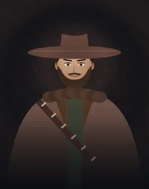
추적척후대
“도망쳐도 소용없다.”
흔적을 쫓고 사냥개를 풀어 끝까지 몰아붙이는 추적자.
- Q추적 다트 2회 · 라운드마다 채움다트가 꽂힌 적은 10초간 위치가 드러난다. 벽에 꽂히면 15초 동안 15m 감지기가 된다.
- E추적 화살 2회 · 라운드마다 채움추적 화살 세 발을 부채꼴로 쏜다(40m). 한 발마다 18 피해, 4초간 위치 노출.
- C조명탄 라운드마다 채움조준한 곳 위로 조명탄을 띄운다(6초). 20m 안 적은 계속 위치가 드러난다.
- X처형 표식 궁극기 · 충전 7점궁극기 — 앞쪽 50m 안 가장 가까운 적에게 10초 표식. 위치가 드러나고, 체력이 30 아래로 떨어지면 그 자리에서 쓰러진다.상대하는 법: 표식 중 교전을 끊고 체력이 낮아지지 않게 회복하세요.
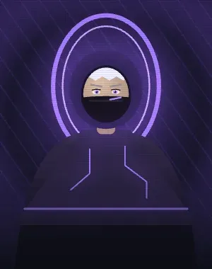
관문척후대
“문은 어디에나 열린다.”
차원문으로 길을 내고, 모습을 감추고, 적을 세상 밖으로 밀어내는 차원 여행자.
- Q차원문 라운드마다 채움누를 때마다 조준한 곳에 문을 하나씩 놓는다(맵 안이면 거리 제한 없음). 두 번째 문을 놓으면 열리고, 우리 팀 한 명이 한 번 지나가면 둘 다 닫힌다(1회용, 25초). 첫 문만 놓은 채면 40초 뒤 사라지고 충전은 그대로.
- E위상 은신 재사용 30초5초간 모습을 감춘다. 4m 밖의 적에게는 보이지 않고 위치 노출도 막는다. 총을 쏘면 풀린다.
- C굴절막 라운드마다 채움4초간 공간을 비트는 막을 두른다. 받은 피해의 절반이 쏜 적에게 그대로 되돌아간다.
- X차원 추방 궁극기 · 충전 7점궁극기 — 조준한 적(40m)을 4초간 차원 밖으로 추방한다. 그동안 보이지 않고, 움직이지도 쏘지도 못하며, 맞지도 않는다.상대하는 법: 추방된 대상에게 탄을 낭비하지 말고 복귀 시점을 지키세요.
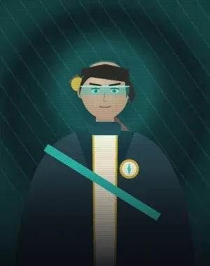
나침척후대
“지도에 있는 곳이면 어디든.”
지나간 발자국을 읽고, 바늘로 적을 짚고, 지도 한 장으로 어디든 가는 길잡이.
- Q발자국 지도 2회 · 라운드마다 채움측량 말뚝을 던진다(30m). 8초 동안 그 주변 22m에 적이 최근 6초간 지나간 발자국이 우리 팀에게 보인다(지금 위치가 아니라 지나간 길).
- E나침반 재사용 24초7초 동안 화면 가운데 나침반 바늘이 가장 가까운 적 쪽을 가리킨다(방향과 대략적인 거리만).
- C측거 라운드마다 채움8초 동안 멀리 있는 적일수록 더 아프게 쏜다. 10m까지는 그대로, 40m 이상이면 피해 +40%.
- X좌표 이동 궁극기 · 충전 7점궁극기 — 지도가 열린다. 누른 곳으로 바로 순간이동(맵 안이면 거리 제한 없이 어디든). 10초 안에 고르지 않거나 취소하면 궁극기를 돌려받는다.상대하는 법: 이동 후 합류 경로와 후방을 직접 확인하세요.
가면척후대
“탈을 쓰면 누구든 될 수 있지.”
남의 능력을 흉내 내고, 적의 얼굴로 섞여 들고, 총과 목숨까지 바꿔치는 탈광대.
- Q흉내 라운드마다 채움40m 안에서 적이 마지막으로 쓴 능력(궁극기 제외, 25초 안)을 그대로 따라 쓴다. 능력 칸에 지금 따라 할 수 있는 능력 이름이 뜬다. 따라 할 것이 없으면 충전이 돌아온다.
- E변장 재사용 28초8초간 적 팀 요원의 모습으로 변장한다. 적 화면에는 그 팀 사람처럼 보이고(테두리 색까지), 적 봇은 5m 안이 아니면 나를 노리지 않는다. 변장 중 첫 사격은 피해 +50%. 쏘거나 맞으면 풀린다.
- C바꿔치기 라운드마다 채움조준한 적(25m)과 총을 맞바꾼다(주무기가 있으면 주무기, 없으면 보조무기). 받은 총은 탄창이 가득 찬 채로 바로 손에 든다.
- X탈바꿈 궁극기 · 충전 7점궁극기 — 조준한 적(40m)과 체력·방어구를 통째로 맞바꾼다. 맞힐 적이 없으면 궁극기를 돌려받는다.상대하는 법: 낮은 체력의 시전자에게 근접 조준을 허용하지 마세요.
전략가 6명
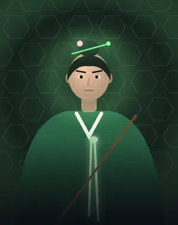
연화전략가
“숨 쉴 곳은 내가 정한다.”
팀의 생존을 책임지는 지원형. 치유와 시야 통제를 담당한다.
- Q회복의 씨앗 2회 · 라운드마다 채움설치 지점 반경 14.4m 아군을 초당 15씩 회복시킨다. 8초.
- E뿌리 결박 재사용 40초덩굴이 솟아 적 1명을 2.5초간 그 자리에 묶는다.
- C안개꽃 3회 · 라운드마다 채움원격 배치 연막. 16초 지속.
- X재생 궁극기 · 충전 6점궁극기 — 쓰러진 아군 1명을 체력 100으로 부활시킨다.상대하는 법: 쓰러진 아군 위치를 지켜 부활 후 재합류를 막으세요.
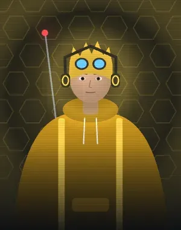
노은전략가
“회로 하나면 충분해.”
전자전 특화. 적의 장비와 시야를 무력화한다.
- Q전자 교란 2회 · 라운드마다 채움반경 18m 내 적의 능력을 6초간 봉인한다.
- E감시 드론 재사용 35초드론을 띄워 적을 자동 추적 표시한다. 10초 지속, 파괴 가능.
- C과부하 지뢰 2회 · 라운드마다 채움접근한 적에게 45 피해와 3초 시야 왜곡을 준다.
- X정전 궁극기 · 충전 5점궁극기 — 맵 전역의 적 능력과 미니맵을 10초간 차단한다.상대하는 법: 차단 중에는 총격과 직접 시야로 대응하세요.
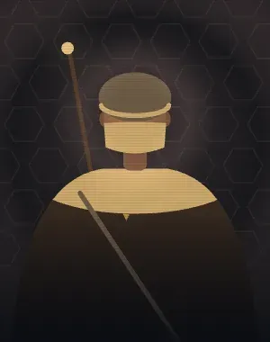
흑사전략가
“모래는 모든 발자국을 덮는다.”
검은 모래로 전장을 가리고 삼킨다. 오래 버티게 만드는 장막꾼.
- Q모래 감옥 라운드마다 채움조준한 곳 반경 5m에 모래 감옥(4초). 갇힌 적은 밖으로 못 나가고 40% 둔화.
- E유사 재사용 28초모래 소용돌이가 적을 중심으로 끌어당긴 뒤 5초간 취약하게 만든다.
- C사폭 라운드마다 채움앞으로 밀려가는 모래벽. 시야를 막고 스치는 적을 둔화.
- X흑사병 궁극기 · 충전 7점궁극기 — 앞쪽 40m 부채꼴의 적에게 검은 모래가 옮는다. 30 부패와 6초 취약, 감염된 적 6m 안의 적에게도 번진다.상대하는 법: 감염된 동료와 떨어져 전염을 줄이세요.
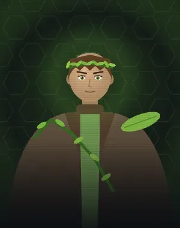
덩굴전략가
“뿌리는 놓아주지 않는다.”
가시와 덩굴로 땅을 뒤덮어 발을 묶는 정원사.
- Q가시밭길 라운드마다 채움내 앞으로 20m 가시밭길을 8초간 깐다. 밟은 적은 50% 둔화, 초당 8 피해.
- E휘감는 덩굴 재사용 30초조준한 곳 반경 5m에서 0.6초 뒤 덩굴이 솟아 안의 적을 모두 2초간 묶는다.
- C흡혈 덩굴 라운드마다 채움가시 덩굴을 쏜다(35m). 감긴 적은 3초간 30 피해를 입고, 빨아들인 만큼 내 체력이 찬다.
- X밀림 결속 궁극기 · 충전 7점궁극기 — 조준 지점 16m 안 적을 둘씩 덩굴로 연결한다(10초). 8m보다 멀어지면 서로 끌려온다. 연결 씨앗 체력 60을 쏘면 풀린다. 한 명이면 씨앗 주변 6m에 결속된다.상대하는 법: 연결 씨앗을 파괴하거나 연결된 동료와 함께 이동하세요.
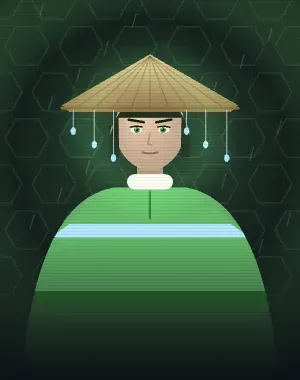
단비전략가
“비가 그치면 끝난다.”
비를 내려 아군을 살리고 폭풍으로 적을 치는 기상술사.
- Q물대포 2회 · 라운드마다 채움25m 빗물 줄기. 처음 맞은 적을 10m 밀어내고 15 피해, 1초 근시.
- E우박 재사용 26초조준한 곳 반경 8m에 3초간 우박. 0.5초마다 8 피해, 40% 둔화.
- C무지개 다리 라운드마다 채움나부터 20m 앞까지 무지개 길(6초). 위에 선 아군은 이동 속도 40% 증가.
- X벼락 사슬 궁극기 · 충전 6점궁극기 — 40m 안 조준한 적에게 먹구름에서 벼락을 모아 0.65초 뒤 내리꽂는다. 8m 안 가까운 적으로 최대 4명까지 연결(60/42/29/21 피해, 1초 뇌진탕). 벽이나 적 사이 거리로 연결을 끊을 수 있다.상대하는 법: 전하가 보이면 엄폐하고 아군끼리 흩어져 연결을 끊으세요.
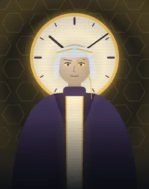
초침전략가
“시간은 내 편이다.”
시간을 되감고, 미뤄 둔 피해를 다시 터뜨리는 시계공.
- Q시간 낙인 2회 · 라운드마다 채움시곗바늘을 쏜다(40m). 맞은 적에게 3초 낙인 — 낙인이 끝날 때 그동안 받은 피해의 60%와 20 피해가 한 번 더 들어간다.
- E되감기 재사용 26초내 체력과 방어구를 3초 전으로 되돌린다(지금이 더 높으면 그대로).
- C역행탄 2회 · 라운드마다 채움시간을 거꾸로 돌리는 탄(35m). 맞은 적은 3초 전에 서 있던 자리로 되돌아간다.
- X메아리 시간 궁극기 · 충전 7점궁극기 — 8초 동안 내 35m 안에서 우리 팀이 적에게 준 피해가 1초 뒤 절반만큼 한 번 더 들어간다.상대하는 법: 교전을 끊어 추가 피해 사건을 만들지 않게 하세요.
능력의 수치는 게임이 업데이트되면서 바뀔 수 있으며, 이 페이지는 현재 게임의 요원 목록에서 자동으로 만들어집니다. 변경 내용은 패치노트에서 볼 수 있습니다.